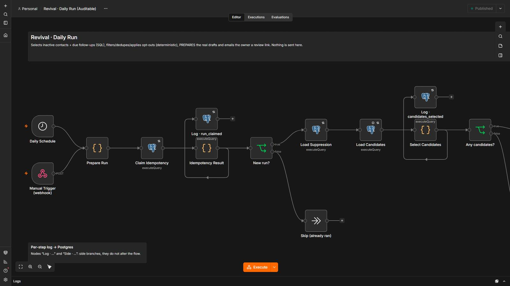
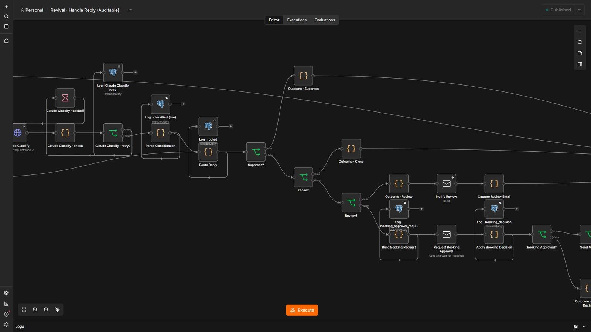
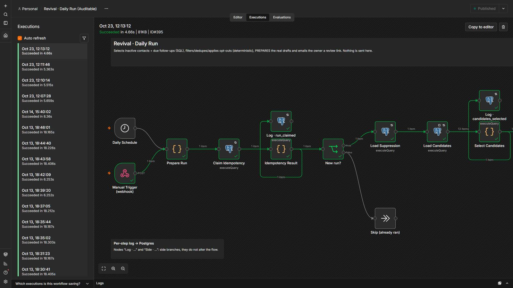

Wake up dormant leads without sending a word you haven’t approved.
Every weekday it prepares one personalized draft per quiet contact. The owner reviews the real drafts on a web page, and every send re-checks the rules at the moment of sending.
5 steps, and who decides each one.
- Code decides
Pick dormant leads
Quiet contacts that are not on the opt-out list. Idempotent per day.
- AI readsCode decides
Draft the message
AI writes text only. Code rejects links and price promises.
- A person
Owner reviews
Send, edit or skip each draft. No clear choice means not sent.
- Code decides
Re-check at send time
Opt-out, touch order and the contact’s local sending hours.
- Code decides
Handle the reply
Opt-outs are detected before any AI; replies are classified and logged.
7 workflows
Lead Revival · Daily Run
Every weekday it picks dormant leads, prepares draft messages and emails the owner a review link.
Step by step
- Weekdays at 09:00 (or manual webhook); idempotent per day.
- Selects contacts that went quiet and are not on the opt-out list.
- Calls Prepare Draft to write one message per contact.
- Emails the owner a link to review the real drafts.
Lead Revival · Prepare Draft
Writes the personalized draft for each contact in a batch and stores the batch as pending review.
Step by step
- Builds the context per contact.
- AI (mock locally) writes the message; code validates it (no links or price promises).
- Contacts that cannot be messaged are marked blocked with the reason.
Lead Revival · Review Page
A web page showing the real drafts: the owner sends, edits or skips each one.
Step by step
- GET shows the batch behind a token; expired or reused links change nothing.
- POST receives the decisions; edited text that adds links or promises is rejected.
- Persists the review in one atomic statement and dispatches only the approved drafts.
Lead Revival · Send Touch
Sends ONE approved draft after re-checking everything at send time.
Step by step
- Re-checks batch approved, opt-out list, touch order and the contact's local sending hours.
- Outside hours the message waits for the window to open.
- Sends (email in mock, GoHighLevel in live) and records the result.
Lead Revival · Send Queue
Every 15 minutes releases messages that were held until the sending window opened.
Step by step
- Finds approved drafts whose time has come.
- Calls Send Touch for each, one at a time.
Lead Revival · Handle Reply
Processes a reply from a lead and stops or continues the sequence.
Step by step
- Detects opt-out requests with code before any AI.
- Classifies the reply (AI in mock) and updates the contact state.
- Notifies a person when the lead shows interest.
Lead Revival · Dashboard
A page with the revival funnel and the state of every batch.
Step by step
- Reads counts straight from Postgres.
- Renders an escaped HTML page.
The system in n8n.
Screenshots of the actual editor and of a real execution, from the local test environment. Click one to open it full size.





